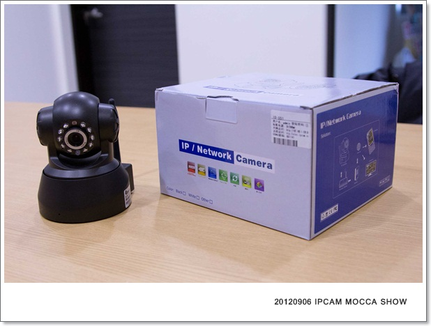
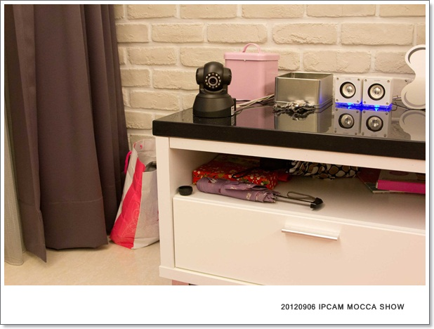
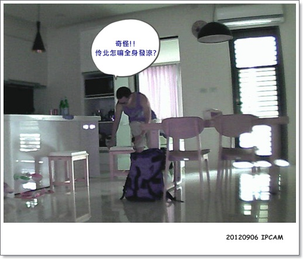
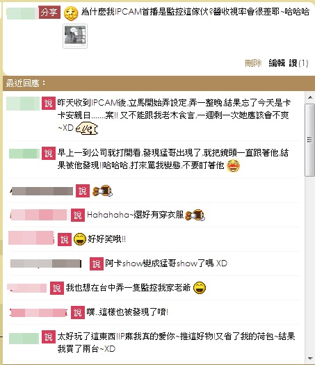

IPCAM滿足了變態偷窺狂媽媽（？）
說起來卡卡真的很幸福，長這麼大很少一個人看家的
從Baby時期，我怕他一個人在家無聊，天天連著籠子一起扛下樓，硬是把卡卡放到我娘那，強迫她照顧
因此雖然一直有在觀望IPCAM這東西，但好像也沒到非買不可醬
反正家裡一直都有人陪，而且萬一不小心看到我老木做了奇怪的事太崩潰也不好......哈
但價格也是遲遲未入手的主因之一，我們看上的那台就要8K，oh 真的太貴了！
但自從到阿罵家安親的次數減少後，卡卡一個人在家的時間就長了
我跟猛哥都覺得是時候可以買了，開始"籌錢"準備購入
就這麼剛好，發摟到P麻的訊息>>新管理員EasySE ipcam 
所以讓我們敗到超值的好物 (窮人家的福氣啊!XD)

我買的是F系列
大家都知道我們家有"靈異體質"，比一般人多了50%的機率買到機王，所以為了以防萬一
我一次下標兩台，萬一收到瑕疵，至少還有一台可以馬上用，另一台就直接退貨給賣家不換了XD
萬一兩台都是瑕疵咧!? (對我們家來說也不是不可能，我也認了..... )
)
如果你沒有特別告知，賣家就是出黑色的機型，如果你要白色的請記得備註嘍！
實體還蠻有質感的，可接wifi，轉動角度左右350，上下120
背面
依序可以接:喇叭、網路線、無線天線、電源
底部
有一個可以鎖倒掛架的孔
這台有紅外線燈，所以夜視功能很不賴，這是我家燈全關室內全黑的狀況下還是可以拍的很清楚
另外也可收音也可播音，但播音有點弱，傳聲很慢又有逼逼啵啵怪聲，常常把卡卡嚇到躲起來，噗！
下面就是聽到聲音躲很遠拍的，是不是有人找不到他在那(?) 乍看之下超像假的立牌的 
所以後來非必要我不會沒事找他聊天
好在收到的兩台到目前為止都還正常運作，
而且這價格跟在台灣買的比實在太親民了，就算一次買兩台一點也不覺得傷
目前我家一台是吃wifI，一台是接有線，有線就非常的穩當，但接wifi的三不五時會瞬斷一下
電視櫃上放一台

電腦桌下倒掛一台-->這就是會拍出很肥的米腸哥那台 XD
兩台放的位子角度還不錯，因為許摩卡根本也不換子，所以很少出現找不到他的情況
接下來看一下我這一個月的紀錄，有時候拍到特別的表情或行為的照片都讓我極度開心吶！！歐活活活
=================IPCAM MOCCA SHOW=========================
20120906 IPCAM首PO，咦? 怎麼是這傢伙 XD

放到噗浪被大家笑屎！！
後來就被規定如果卡卡不在，就不能看IPCAM，哈哈哈

買IPCAM後，最愛唸我浪費錢的卡內拔說:他們都在睡覺呀有什麼好看的
事實證明:小狗在家果然一整天都在睡覺!!有夠無聊的!!! XDDDD

雖然大部分都在睡覺，但連睡覺都超可愛的，我還是看的很過癮 
睡到翻掉！！！
手好短伸到最長也才醬 XD
歪掉的鴨趴，那個腿！好短！！！
最近的新外號：米腸哥，這顆鏡頭離他很近，每次拍起來都超肥美的 哈哈

最近天氣稍冷就會自動上甜甜圈取暖
三犬麻做的這床真的很舒服，我自己很常跟他玩一玩就躺在那看電視 噗哈哈哈

小BABY睡姿!!!!這真的太讓我分神了，上班就盯著這小臉兒 
(還好我上班的座位是全公司最好的風水寶地 XD)
聰明的小子，現在發現IPCAM轉動就會盯著跟老娘我互看(?)
某天打開，突然發現這傢伙在瞪我！！！！嚇
看樣子我這遠端監控的技倆應該已經被發現了XD
如果沒有睡覺就是在發呆
觀察了一個多月，這小子幾乎都守在門口，其他地方都不去，頂多變化一下姿勢

看到他這臉就會很想快點下班陪他
小卡卡發傻了！！
這就是為什麼我去那都希望帶著卡卡一起，
平常上班能陪他的時間真的不多，一定要好好把握珍惜當下擁有的，那怕只是盯著畫面看他我都覺得是幸福
每次都這無辜憂鬱臉，害老娘下班都要飆車！！
價格&使用後的心得，真心覺得還蠻值得敗的！推推推推推 哈哈哈
雖然才用一個多月，不知道壽命到底多長(?) 也沒保固，壞了也不知找誰求救
但在台灣買一台的價錢可以買好幾台F系列耶!!! 想買的快點入手吧～
我覺得家裡至少要有兩台比較方便監控，到時萬一找不到小孩時候，就會很懊惱怎麼不多買幾台？ㄎㄎㄎ
但缺點就是萬一不幸拿到品質不好的，要退換貨會很麻煩，自行考慮一下要不要賭一把唄！
淘寶購買連結--> F系列
(字夠大了吧!!應該不會再有人留言問 那裡買? = = )